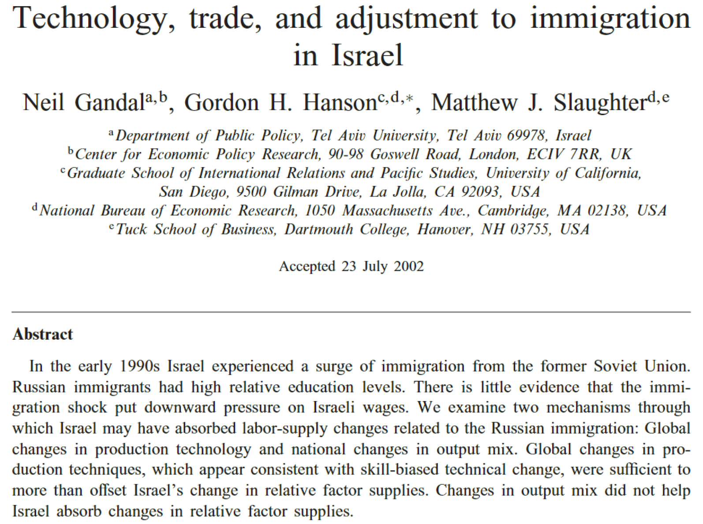
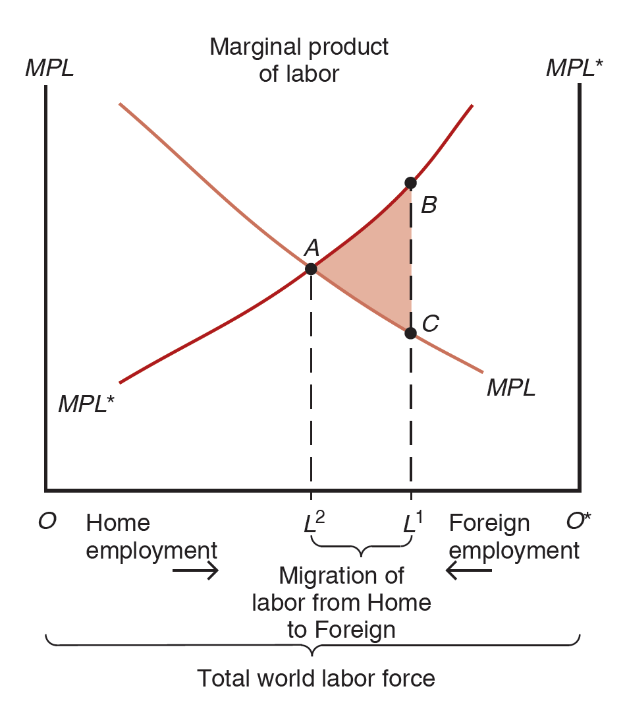
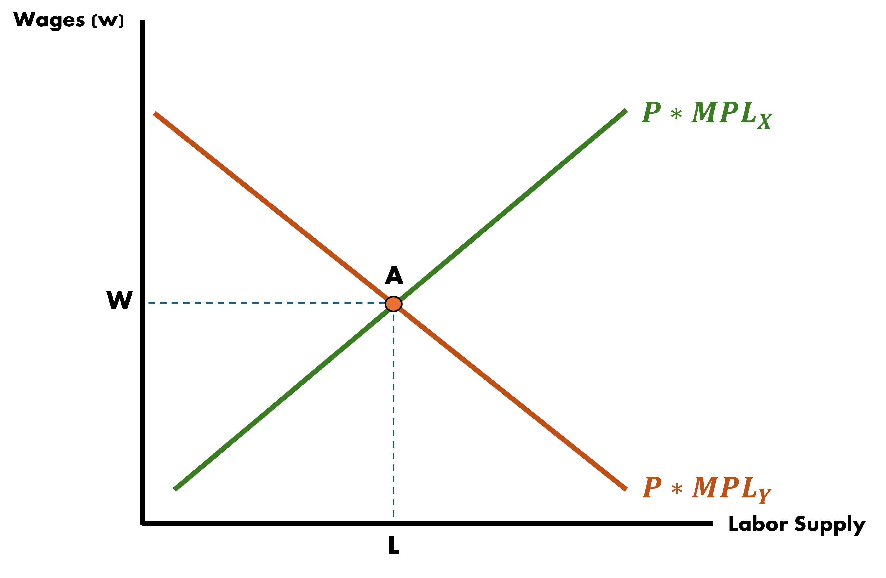
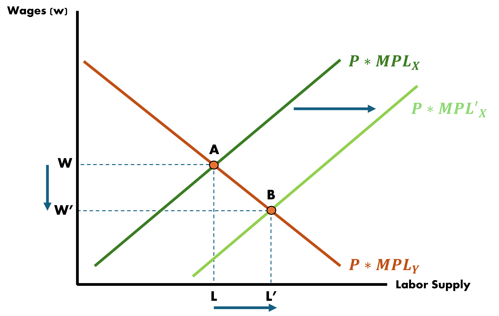

Labor Supply
So far our models have kept labor supplies fixed across countries and not allowed for migration of labor between countries
Workers were able to switch sectors in Ricardian, HO, and Specific Factors models but not country
If we were to incorporate this migration-feature into a model it may make it more realistic
Cause of Migration
There are many possible and imaginable reasons individuals may migrate. We can categorize them into:
Push Factors
Pull Factors
Social Networks
Migration: Push Factors
These are things that may incentivize individuals to move away from their origin country
- Local purchasing power being too low
- Housing too expensive
- Recessions
- Political strife/violence/uncertainty
- War & famine
Climate change and related agricultural patterns may induce further mass-migrations in the coming future
Migration: Pull Factors
These are things that may draw people into a receiving country
- Income levels
- Healthcare
- Socioeconomic stability
- Educational support/institutions
Migration - Theory
In theory, suppose we were in a scenario where trade was already open and now we wanted to allow for the free movement of labor
In theory, free movement of labor will see wages harmonize across countries as we saw them across industries in our simple models
It will do that to an extent, but the gap between countries will still exist somewhat
The European Union is a great real-world example of this process:
- Brexit placed a great deal of focus on limiting the movement of people while trying to ekep the movement of goods open
Migration - Practice
In practice, empirics have shown evidence of effects of low-skilled worker inflows not impacting other local worker groups

Migration - Practice
Our very own Mark Colas recently published:

Migration - Practice
In practice, high-skilled migrant influxes show a similar lack of impact

Migration: Effects on Wages
We will keep it simple by assuming there are:
- Two countries
- Produce a single good made with labor and an immobile factor
Since there is only one good, there is no reason to trade however there will be “trade” in labor services
- Workers move in search of higher wages
In the absence of migration, wage differences across countries can be through technology differences, or differences in the availability of the immobile factor
Migration: Effects on Wages

Horizontal axis is the total world labor force
MPL curves represent production of the same good in different countries
Wages are on the vertical axis and are “real wages” (wage divided by the price of the good in each country)
Migration: Effects on Wages
Home workers: \(OL^{1}\)
Foreign workers: \(L^{1}O^{*}\)
Immobile Factor endowments are different and cause real wages to be higher in Foreign (point B) than in Home (Point C)
Who moves where?
Home workers will migrate to Foreign
This reduces the Home labor force and raises the real wage in Home
In Foreign the opposite occurs
Migration: Short-Run
Let’s view a stylized example of how migration may impact local labor markets in the Short-Run
Recall the OH model, where labor can move between industries but capital is fixed
We also have that labor is a sum of both industry labor, such that:
\[\bar{L} = L_{x} + L_{y}\]
Migration: Short-Run

Migration: Short-Run

Migration: Short-Run
Effects
- Immigration causes total labor to change: \(\bar{L}' = \bar{L} + \Delta L\)
- Shifting out the supply curve of industry \(x\) causes the corresponding marginal productivity curve to shift right by \(\Delta L\)
Migration: Short-Run
Equilibrium Outcomes
- Number of workers in both industries rises
- Wages across both industries fall
- Why?
- Labor became less scare/more abundant, relative to the fixed amount of capital/land
Migration: Long-Run
In the Long-Run other things are allowed to move which makes outcomes somewhat different:
- Given a rise in labor (\(\bar{L}\) to \(\bar{L}'\) in our example), capital/land/labor ratios readjust
- Immobile factors are free to shift in the Long-Run
- Instead of what we see in the Short-Run, these ratios adjust to ideal levels such that ideal production levels are maintained
- \(\Delta L\) will flow entirely into the labor-intensive industry